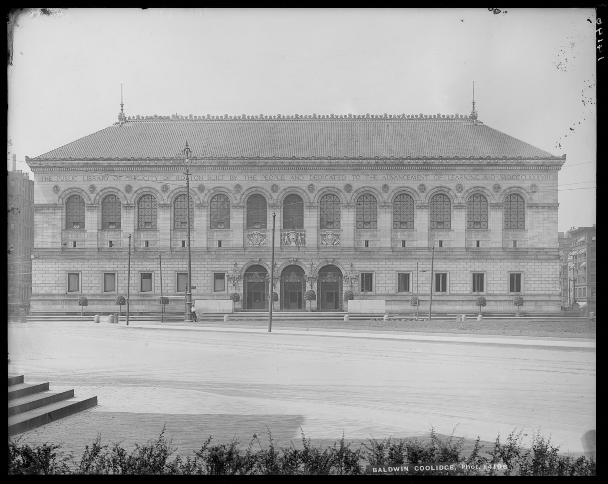

Executive Summary
Boston Public Library and the Institutional Data Initiative at Harvard Law School Library published a technical report in August 2026. They ran 1,473,635 public domain newspaper scans, published between 1795 and 1930, through a fifteen-step pipeline and turned them into a structured dataset. The pipeline itself and the small models used inside it were released alongside the data.
The part worth reading is not the scale but the cost. The report estimates that generating the same volume of tokens through frontier model APIs would have cost between $250,000 and $800,000. The work actually ran on a GPU node the team owns, and priced at rental rates that comes to roughly $25,000. One phrase in the abstract needs care, though. "Computationally frugal enough to run on workstation-level hardware" is a design goal, not the specification of the machine that did the work. The report says in the same passage that throughput is the price of that frugality.
Of the fifteen steps, only the two OCR passes take any real time, and the rest mostly finish in a few minutes or less. Because the process was broken into separate steps, how long each one took and where its judgments wobble both survive as numbers. For a holding institution, running the refinement of its own material means holding those numbers too.
Key Figures
The first two numbers are what this pipeline produced and what it took to produce. The next two show the unit the result is divided into and where it is still weak.
Source: arXiv:2608.18972, Institutional Newspapers Pipeline technical report (2026-08)
16.3B
Tokens pulled out by VLM OCR
16,302,004,429 by o200k_base. Tesseract on the same scans yields 14.66 billion
$25,000
Compute cost as the report figures it
About 1,650 hours priced as rented hardware. Frontier APIs would have run $250,000 to $800,000
83.1M
Crops cut from the pages
Articles, advertisements and photographs, 56.4 per scan on average. The unit every later step works on
80.8%
Reading order position accuracy
Micro figure. The macro figure, averaged per scan, drops to 72.1%
1.47 Million Scans, 16.3 Billion Tokens
Historical newspapers are awkward material for a computer. The pages are dense, the columns irregular, and decorative headings sit next to tables, so general-purpose tools do not cope well. The report states that difficulty first, then reports what its own pipeline produced when it was run against 1,473,635 scans from Boston Public Library's holdings, published between 1795 and 1930. Anything that might still be under copyright was left out from the start. Only issues published before 1931 went in, and that call was made using the issue-level metadata Boston Public Library holds.

What came out is not a pile of scan images. The pages were cut into 83,147,041 crops, and each crop carries OCR text, coordinates, a type, a language, named entities, a subject and embeddings. A crop is the rectangle drawn around one uninterrupted run of text or one visual element, such as a single article or a single advertisement box. A headline is not severed from the article it introduces, and a picture-led advertisement usually sits whole inside a single crop.
The character of this collection shows in the language distribution. English accounts for 97.61% of the crops that carry a language code, but the tail behind it is not short. Yiddish covers 983,375 crops, or 1.18%, German 0.56%, Swedish 0.46% and French 0.09%. The report reads this as the trace of the immigrant press held at Boston Public Library. Seventy-three distinct language codes appear in total, and the ten most common account for 99.97% of them.
Once the material is cut up, things become countable. By final category the most common crop is not the article but the advertisement, while the majority of the tokens sit with articles. The gap between those two curves widens over time. Until the 1860s, the share of page area advertisements occupied was roughly the same as the share of text tokens they carried. From the 1870s onward the area runs ahead, and by the 1920s the gap reaches about 15 percentage points. The report reads this as advertising turning progressively more visual over the period. It is a question you cannot put to a pile of scans.
The builder is the Institutional Data Initiative at Harvard Law School Library, and Boston Public Library supplied the material and the domain knowledge. The two institutions also released Institutional Books, a corpus of library holdings, in 2025, and that corpus was later used by another team to train a language model. This release sits in a Hugging Face collection and a GitHub repository, and an Agent Skill file ships with it so that agents can put the data to use directly.
How a Scan Becomes Data
The pipeline has fifteen steps. It fetches and caches the scan, cuts it into crops, runs two different OCR engines over each one, decides type and language, works out the reading order, attaches named entities and subjects, and computes embeddings last. The diagram below groups those fifteen steps into six blocks by purpose.
2.1Cut First, Name It Later
The first step is cutting the page into crops, and one decision the team made here governs everything downstream. Cutting and naming were not handed to the same model. Most crops on a page are either articles or advertisements, and the team judged that training detection and classification together would push the class imbalance far enough to drag both down. So detection is a single YOLO26x that cuts type-agnostically, and the type decision was pushed back. Working from only 1,020 human-annotated scans, this 55.7M-parameter model reached precision 0.927 and recall 0.910 on a held-out set of 153 scans.
Keeping the steps apart also means one step can be opened up on its own. The team ran Eigen-CAM heatmaps over the trained segmentation model to see where on the page it responds. Activation was strongest on the masthead and the headline banner, then along the boundaries between columns. It cuts by reading the structure of a newspaper page rather than whatever marks happen to be on the scan. What it misses was measured too. Detected crops cover 89% of a scan on average, and most of the remainder turned out to be the outer margin, where the model creates no crops in the first place. Those margins take up 2.6 to 3.6% of the scan on each side.
2.2Why the OCR Runs Twice
Every crop goes through OCR twice. One pass is Tesseract 5. The failure modes of traditional OCR are well documented, and it returns word-level bounding boxes, which slot straight into the AltoXML format the library's existing search systems already use. The other pass is dots.mocr, a 3-billion-parameter specialised VLM. It can parse tables and handles multiple languages, at the risk of falling into loops that repeat the same token endlessly on damaged pages. The difference between the two shows up in the count. The VLM produced 16.3 billion tokens, Tesseract 14.66 billion.
Type classification also uses two signals. An image classifier and a text classifier run separately and are then combined. Overall accuracy is 91.3% for the image side and 92% for the text side, and the two agree on 90.55% of crops. They also wobble in the same places. Mean confidence drops on photographs and cartoons for both, and the report reads this as the two classifiers signalling their own uncertainty on the same categories.
The reason for running two signals at all becomes clear in exactly those categories. For photographs and illustrations the image classifier reaches an F1 of 0.84 while the text classifier manages 0.48, and for cartoons the split is 0.92 against 0.68. These are crops with almost no readable text, so a text signal alone collapses. The combination rule therefore follows whichever classifier is more confident, but gives the image classifier priority when it answers photograph or empty. The final decision matched the image classifier on 95.03% of crops and the text classifier on 95.51%. Neither one reproduces the final result alone. The annotations that trained both classifiers were themselves produced automatically by a 30-billion-parameter VLM and sampled for human review, and a final check of 600 annotations came back 91% correct under strict scoring.
For reading order the team dropped transformers entirely. LayoutReader-style models, the usual choice for this task, are computationally expensive at library-collection scale and operate on spans finer than a crop. Instead the pipeline clusters the x-axis centres of crops with HDBSCAN to find the columns, then orders crops top to bottom within each column, all rule-based. The last step, embeddings, uses DINOv2-small on the image side and potion-multilingual on the text side, 2,560 bytes per crop, roughly 213GB pre-computed and shipped with the data.
Why They Did Not Call a Frontier API
The report gives three reasons for not calling a large model: reproducibility, operational control and cost. The first two come up whenever an institution handles its own material, but the third is written down as an order of magnitude. Generating 16.3 billion tokens with frontier models would have cost between $250,000 and $800,000, assuming $15 to $50 per million output tokens. What actually happened was about 1,650 hours on a GPU node the team owns, and priced at $15 an hour of rental, the report puts that at roughly $25,000.
One line in the abstract should not be read at face value. "Computationally frugal enough to run on workstation-level hardware" is a design goal. The machine that did the work is a single GPU node owned by the Institutional Data Initiative, specified as 8 NVIDIA L40S GPUs, 256 CPU cores and 768GB of RAM. That is not something you put on a desk. The report itself, in the sentence right after saying the pipeline was designed to run on workstation-grade hardware, notes that throughput is the main trade-off. The point is not that the machine is small. It is that the whole job finished on the team's own infrastructure without renting anyone's API.
Where the time went is published as well. On a batch of 200 issues the full run averages 86.69 minutes, and the two OCR steps take 45.1 of those minutes, more than half. The remaining thirteen steps mostly run in a few minutes or less.
Cost was not the only reason. There was a technical one as well. Earlier work had shown that passing a large text region of a nineteenth-century page to a VLM whole, without cutting it down, induces repetition loops that push character error rates sharply up. So the team chose to run OCR at crop level rather than page level. Cutting small turned out to serve quality and cost at the same time.
When the Holder of the Material Also Runs the Process

The real design principle in this pipeline is modularity. The report explains why the steps were kept apart: so that the Institutional Data Initiative and Boston Public Library teams could each evaluate, interpret and steer them individually, and so that each step stayed customisable for other collections. Separating cutting from naming came out of that principle, and so did choosing a clustering algorithm over a transformer.
What this structure means in practice is straightforward. Every point that calls for a decision can be settled on the institution's own evidence. In this case there were at least four such points.
- They set the scope of release themselves. They drew the line at pre-1931 issues and checked that line against the issue-level metadata the library holds. There was no waiting on an outside vendor's assessment.
- They chose the material used for correction themselves. Crops where language detection scored below 0.50 in confidence, or held fewer than thirty words, were filled in from issue-level metadata from the Library of Congress Chronicling America records. Yiddish, the second most common language in this collection, is not supported by the detector at all, so every one of its language codes came through that route. 2,521,901 crops were filled in this way, 3.04% of the crops that carry a language code.
- They did not take someone else's records at face value either. Errors in the locality metadata coming from the Library of Congress API were corrected directly, including entries where the city of Boston was attached to the state of New York.
- They decided how to handle sensitive terminology themselves. Thesaurus matching for terms relating to race, ethnicity, immigration and citizenship was added together with Harvard Law School Library's public data project, and the report carries a warning alongside it not to read those matches as an interpretation of the underlying text.
The fact that the scans never left for someone else's cloud belongs in the same list. With that combination in place, a holding institution changes position. It stops being the party that merely has the material and becomes the party that has the material and the means to make it usable. The report says the team intends to repeat the experiment with other library partners, and releasing the pipeline and the models is what gives that statement substance.
The same attitude survives in the release format. The dataset ships as Parquet shards of 250 scans each, with one row per scan, and a suffix on every column name marks where that value came from. _src is a value taken from the collection itself, _ext a value matched in from an external record, _gen a value the pipeline produced, and _exp one produced by a method the team considers experimental. Whoever receives the data can tell original from inferred by reading the column name. Values replaced from issue-level metadata, such as language codes, are stored with the confidence field left empty so they never blend in with direct detections.
Editor's Note: The question Pebblous keeps running into on data quality work has the same shape. When an organisation that owns the source material hands the whole refinement process to an outside party, nobody inside the organisation is left to answer why something was classified the way it was. What this case shows is that the process does not have to be enormous. String fifteen small models together in order and 1.47 million scans pass through.
The Limits the Report Wrote Down Itself
This report does not oversell its own output. It records limits in several places, and some of them are things anyone planning to use this data needs to know before they start.
- Named entity recognition and subject classification are experimental. The entities come from an off-the-shelf model, and the report says these detections should not be taken as they are to infer the nature of a piece of text. The scale is large: 142,245,435 person detections, 155,570,972 locations and 49,059,445 organisations.
- Subject classification scores twelve labels zero-shot. Across the 82.98 million crops with a subject prediction the mean top-1 confidence is 0.65, while the standard deviation per label ranges from 0.08 to 0.23. That spread is the reason the report calls this step experimental, and it advises working from the full distribution of scores rather than picking the top label alone.
- The reading order method rests on the assumption that a page is laid out in columns. The report states plainly that it is unlikely to fit pages with looser column structure. The 80.8% figure is uneven too: on photograph and illustration crops position accuracy falls to 0.486.
- The models and methods were developed and tested against a portion of Boston Public Library's collection. The report expects the pipeline to struggle on newspaper scans meaningfully different from what is in that collection.
- VLM-based OCR remains the biggest bottleneck at this scale. As a next direction the team is looking at training an OCR model specifically for historical newspaper crops, on the hypothesis that it could be smaller, more accurate and less prone to repetition loops.
Rights come with caveats as well. Pre-1931 publication puts this material in the public domain in the United States, but the same works may still be subject to copyright or other rights in other jurisdictions. Nor does the absence of a copyright claim guarantee public domain status. Legal assessment of how and where the material is used is the user's responsibility, the report states flatly. The funding is disclosed too: the work was supported by unrestricted funding from Microsoft, OpenAI, Meta and Jane Street.
The embeddings carry conditions of their own. The text embedding model used has no attention mechanism and leans heavily on token distribution, which limits its usefulness in semantically ambiguous contexts. Both embedding models are generic, and the report suggests recomputing with a domain-specific model for specialised uses.
Taken together, this release reads less like a finished dataset than like a working process other institutions can hold up against their own stacks. What deserves attention more than the 1.47 million scans is that the process is open at every step and that it ended in five figures of dollars rather than six. The conditions for a holding institution to acquire refining capability sit lower than one might expect.
References
- 1.Cargnelutti, M. et al. (2026). "Institutional Newspapers Pipeline: Deriving Billions of High Quality Tokens from Historical Newspapers." arXiv:2608.18972.
- 2.Institutional Data Initiative. (2026). "Institutional Newspapers" (dataset and model collection). Hugging Face.
- 3.Institutional Data Initiative. (2026). "institutional-newspapers-pipeline" (source code). GitHub.